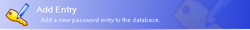
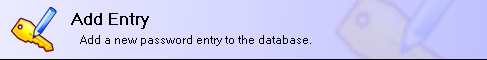
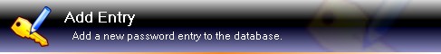

GUI Options
Explains various Graphical User Interface (GUI) options.
|
| GUI OptionsExplains various Graphical User Interface (GUI) options. |
 Dialog
Banner Styles
Dialog
Banner StylesKeePass supports various different dialog banner styles. These styles are independent from the operating system and can freely be used on all systems.
WinXP Login:

WinVista Black:

KeePass Win32:

Blue Carbon:
